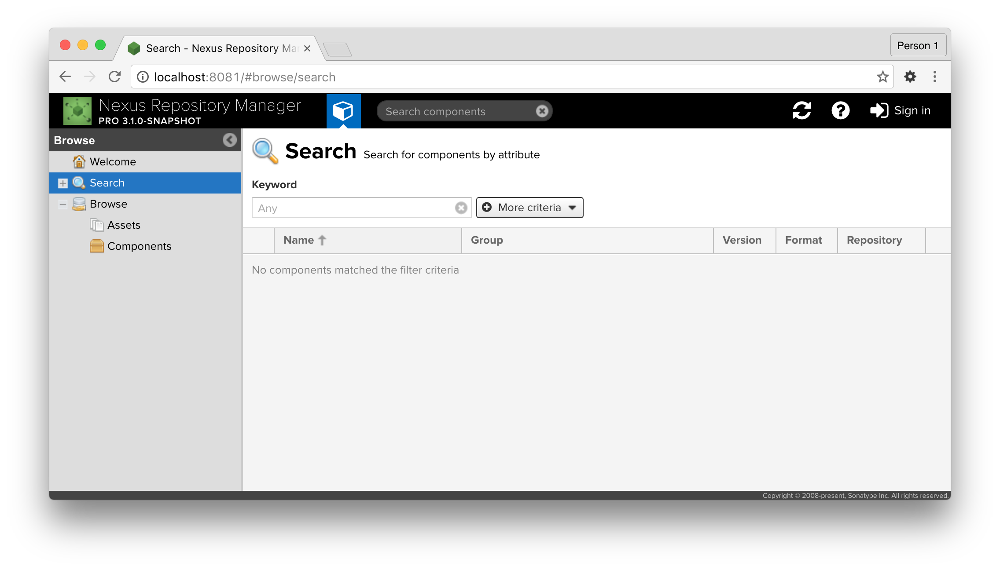
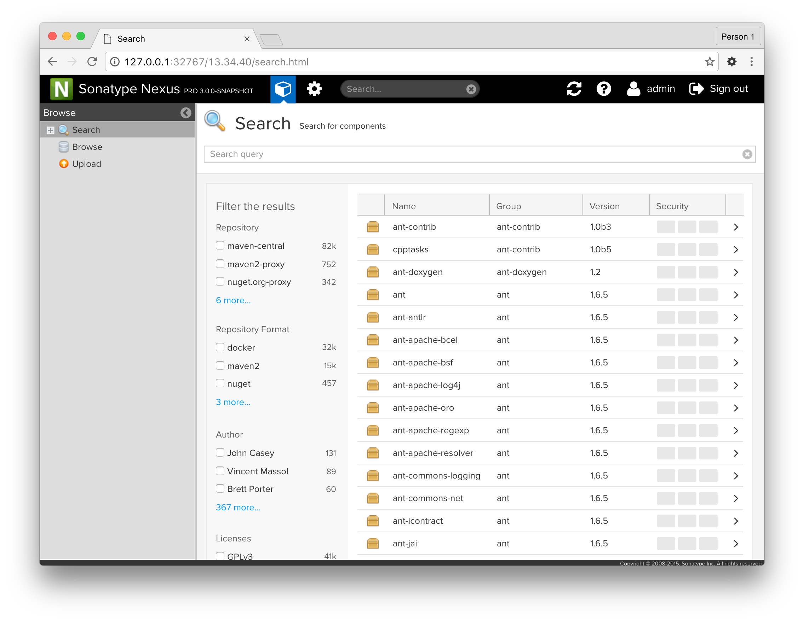
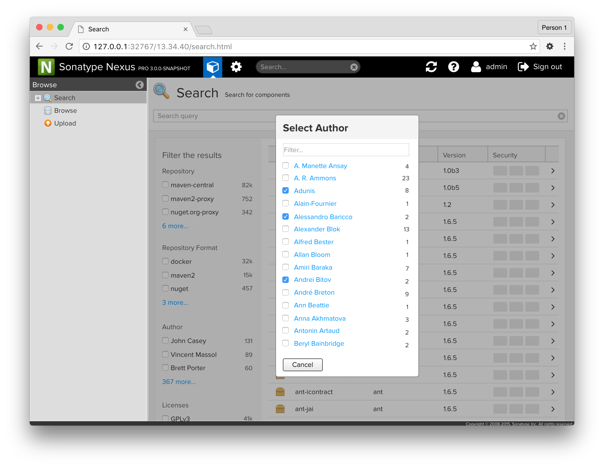
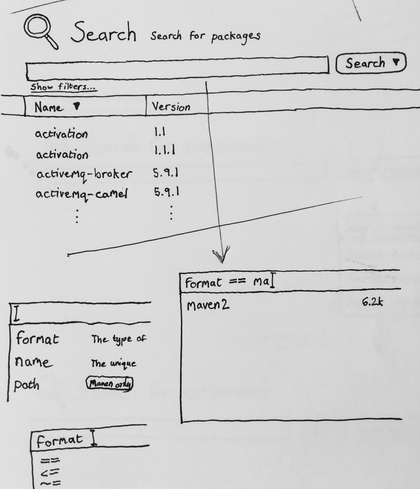

Developers care a lot about software modularity. The more code you can write once and reuse in other projects, the better. Nexus Repository Manager is a tool intended to help developers store and consume these reusable components.
Many popular languages and tools have public repositories that serve as the authoritative store for their components. Maven has Maven Central, Docker has Docker Hub, Node.js has npmjs.com.
A common feature of these public repositories is the ability to search for components that you can use in your own projects. Since Nexus can not only store the components you write, but also proxy these public repositories, it follows that you might want to search the components in your Nexus as well.
Nexus 3.0 supports Elasticsearch under the hood, and you can use ES syntax in the search feature. However, when you use these advanced search features, you’re doing so blindly, since Nexus doesn't have autosuggest or hint at the things you can search for. The current interface looks like this:
In addition to the problems mentioned above, you can't even tell if there's anything to search. In a fresh install, Nexus will be empty. You might think that you did something wrong, when in reality, there was nothing to search.
I mocked the following in Axure to demonstrate how we might create a better experience:
The first thing you notice is the list of filters on the left. Similar to how Amazon and other e-commerce sites work, we show valid filter options and values for each filter.
Because the number of values for each filter can number into the hundreds (or thousands), we only show the most common values in this space. To view and filter through the rest, you click the more... button.
When you make your suggestions and close the modal, those selections will be visible under their associated filter category.
Also, notice the search query box at the top of the filter. Unlike before, this is a single field that uses standard SQL syntax to construct queries. If no query is specified, everything is returned. The filter checkboxes are used to further narrow the results.
These search/filter mechanisms may be used independently or in parallel. The search query is slighly more flexible and advanced, while the filter checkboxes are easier to use and suffice for the vast majority of casual searches.
The autosuggest functionality is as you would expect, and outlined below.
 Back to home page